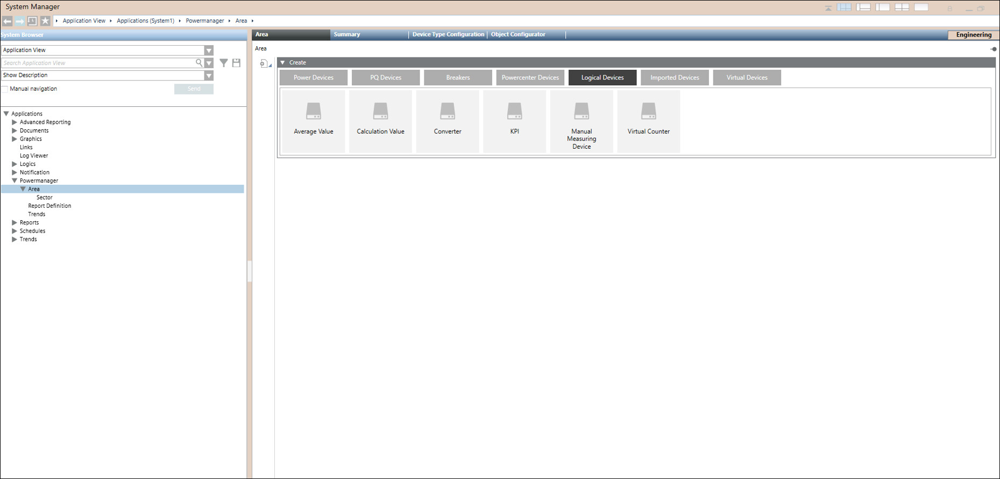
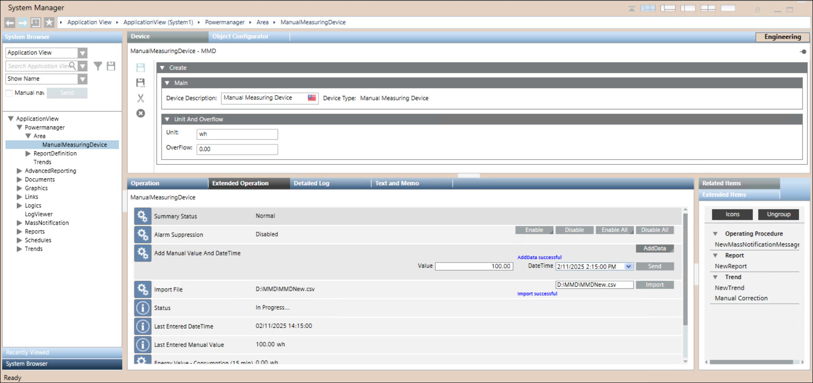
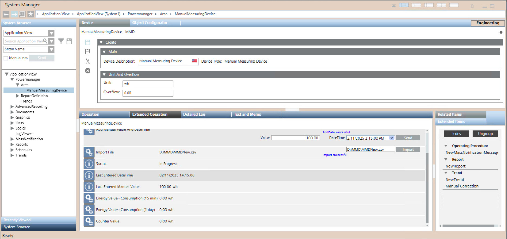
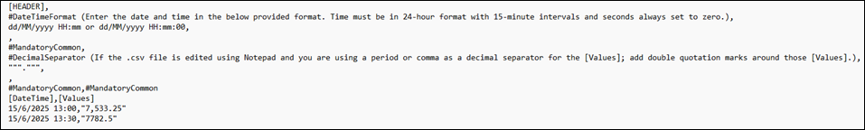

Logical Devices
Logical devices are virtual devices available in Powermanager. They can be used to setup certain calculations, formulas and derive measurement values from physical devices. These devices are used to calculate average, convert energy to power, power to energy, calculate key performance indicators (KPIs) and energy consumption.
The following types of logical devices are available in Powermanager:
Average Value
The average value device is a logical device, which enables the user to calculate the average value of measurement point over a specific time period. You can configure an average value device to calculate values over hours, minutes, or seconds.
After configuring an average value device, the user can monitor, represent, and archive the average value calculated by the device.

Calculations with an average value device are delayed by fifteen seconds.
This device supports other properties in addition to Powermanager properties.
Calculation Value
A calculation value device is a logical device, which allows the user to create and evaluate arithmetic or Boolean expressions. Variables are assigned to measurement points from devices and can be used to perform any of these operations. These arithmetic and Boolean expressions are evaluated when one of the measurement point (variable) value present in the expression changes, and the result is updated into the logical device. A measurement point used in a calculation value device cannot be added as a source measurement point to the same device, but can be added as source measurement point to other calculation value devices.
Calculations with a calculation value device are delayed by fifteen seconds.
This device supports other properties in addition to Powermanager properties.
Converter
A converter is a logical device which helps the user to convert the power values to corresponding energy values over a given interval of time or vice versa. Once a converter device is configured, the user can monitor and archive either the power or energy values calculated.
During conversion the unit of the converted values will be derived as follows.
- kWh unit is derived from kW unit or vice versa
- varh unit is derived from var unit or vice versa
- kVAh unit is derived from kVA unit or vice versa
Calculations with a converter are delayed by fifteen seconds.
KPI
A Key Performance Indicator is a measurable value that demonstrates how effectively a company is utilizing energy. Using this device you can generate the Key Performance Indicators (KPI) of any building or industry. A KPI (Key Performance Indicator) device allows the user to custom-define KPIs. The user can define how the KPI is calculated. KPIs can be calculated according to time ranges like 15 Minutes, Hourly, Weekly, Monthly and Yearly.
For every new KPI that is added, the user can use all elements for the calculation. There is the possibility to either calculate with measurement point elements, static values and variable that can be edited globally, e.g. numbers of employees, square meters, etc.
Calculations with an KPI device are delayed by fifteen seconds.
This device supports other properties in addition to Powermanager properties.
Virtual Counter
The Virtual Counter is used to calculate the consumption values such as active energy, reactive energy and universal counter from a physical device or another virtual counter device.
For example, consider a scenario wherein a system consists of an incomer connected to two outgoing feeders and the energy meters are only available at the incomer one of the outgoing feeders. You can calculate the energy values of the outgoing feeder without the energy meter, by configuring the virtual counter accordingly.
Calculations with a virtual counter device are delayed by fifteen seconds.
Manual Measuring Device
For procedures to create, configure Manual Measuring Device, see the step-by-step section.
Several electrical subsystems within non-residential buildings or small and medium industrial plants consist of measuring devices, which are either not capable of or restricted from communicating with any external systems such as Powermanager. The manual measuring device feature enables you to manually add data from an external device that cannot be integrated with Powermanager.
Creating a Manual Measuring Device uses one device license.

Manual Measuring Device is used to calculate consumption values (15mins and 1day) when there is no communication with the real time devices and user can generate reports. It works independent of any Extension Module (BACnet/ IEC).
User can note down the energy value from energy meter and manually enter it in the Manual Measuring Devices with this 15mins, 1day values will be obtained.
Manual Measuring Devices Workspace


In Engineering mode, you can configure a device type or a device at the area level in the Area/Sector tab.
Extended Operation tab allows you to configure Manual Measuring Device.
Summary Status: Displays status of summary
Alarm Suppression: Displays Alarm Status
Add Manual Value And DateTime: Displays Value And DateTime added
Import File: To Import .CSV File
Status: Displays the Status message of the import file
Last Entered Datetime: Displays Latest DateTime
Last Entered Manual Value: Displays Latest Manual Value
Energy Value Consumption (15min): Displays values for every 15min interval (you can see the value in reports)
Energy Value Consumption (1 day): Displays values for every 1day interval (you can see the value in reports)
Counter Value: Total Energy Consumption (you can see the value in reports)
File Format for Importing .CSV File
A sample file named MMD_Sample.csv is located in the folder [Local Drive]\Siemens\SENTRON\Powermanager\[Current Project]\Data.
When you open the MMD_Sample.csv sample file, it displays the following format for reference.

NOTE 1: Any deviation from this format results in a data error.
NOTE 2: The Value and DateTime field conditions used during manual entry of single data also apply to .CSV file data. For more details, see Step 15 and Step 16 under Create and Configure Device.
Header Information
DateTime Format
- Specifies the required format for timestamps: DD/MM/YYYY HH:mm or DD/MM/YYYY HH:mm:00
- DD = day (for example, 15)
- MM = month (for example, 6 for June)
- YYYY = full year (for example, 2025)
- HH = hour in 24-hour format (for example,13 for 1 PM)
- mm = minutes (for example, 30)
- :00 = optional seconds (always set to 00 if included)
DecimalSeparator and Values
- If the .CSV file is edited in Notepad, and you are using a period (.) or comma (,) if the decimal separator is used in the [Values], it is mandatory to add quotation marks (" ") around those [Values]. Failure to do so may result in data errors.
- "7,533.25"- This value uses a comma as a thousands separator and a period as a decimal separator.
- "7782.5"- This value uses only a period as a decimal separator, with no comma.
DateTime | Values |
15/6/2025 13:00:00 | "7,533.25" |
15/6/2025 13:30:00 | "7782.5" |